Humanoid robotics
Adventures with Johnny — robotics talk
Sharing the build-test-fail-repeat journey of turning a low-cost humanoid into a useful manipulation platform.
A deliberately messy visual trail through robots, simulation, computer vision, reinforcement learning, CAD, SLAM, home robotics and whatever else I got obsessed with.
Rough ordering for now. Dates/captions can be tightened later.
Sharing the build-test-fail-repeat journey of turning a low-cost humanoid into a useful manipulation platform.
The long-running goal: useful robots doing real things in normal homes.
Interactive real-vs-simulation overlays and silhouette IoU for geometry/calibration debugging.
Real, simulated and blended views with masks, tip errors and absolute difference visualization.
From PyBullet and behavior trees through ACT imitation learning, manipulation and mobile-platform experiments.
A tiny captured rollout from the recent experimentation stack.
Messing with mobile-robot navigation, maps and cheap platforms long before buying the perfect home robot.
Onshape design work for a custom webcam pan/tilt mechanism.
Learning CAD by continuously designing and printing useful little objects.
Point clouds, fiducials and visual localization experiments around a humanoid/mobile robotics stack.
The playlist updates here automatically as new Johnny videos are published.
A few individual experiments/talks, plus the playlist above.
Kept as a visual record, but stripped of old dead/blank video embeds.
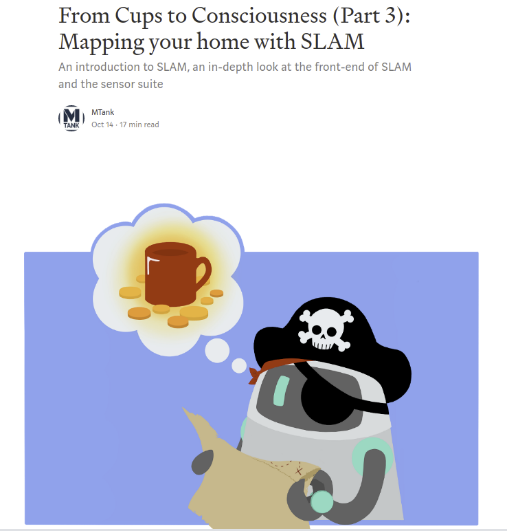
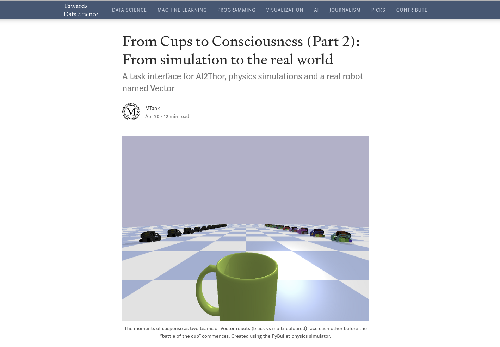
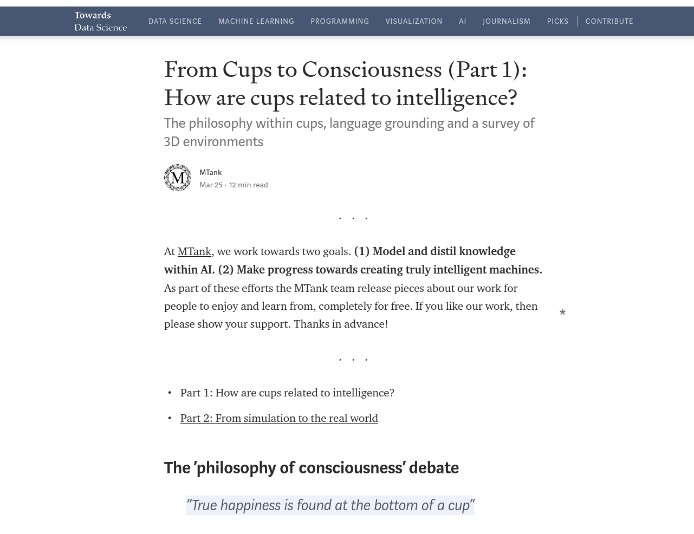
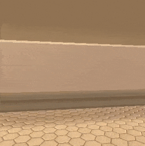
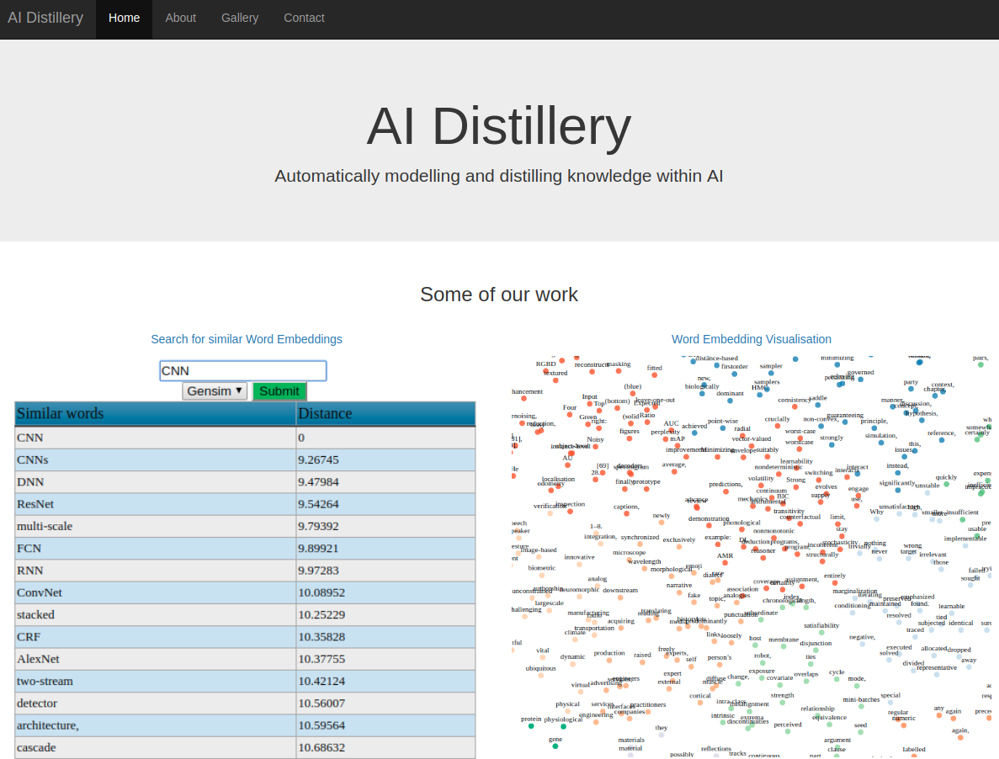
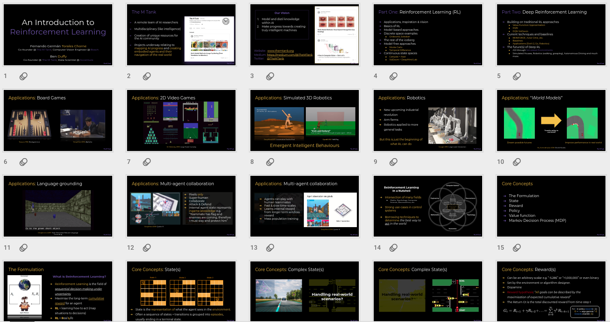
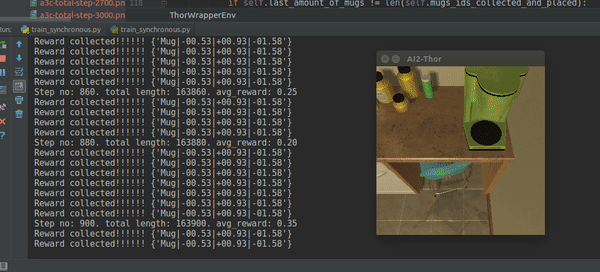

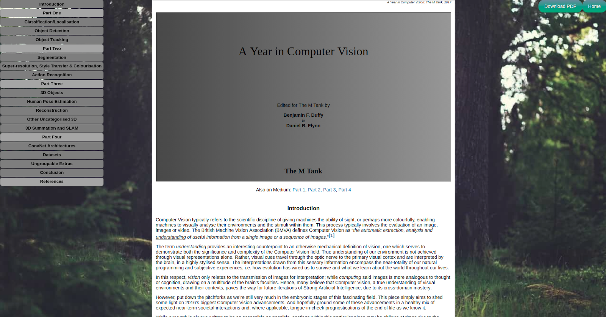
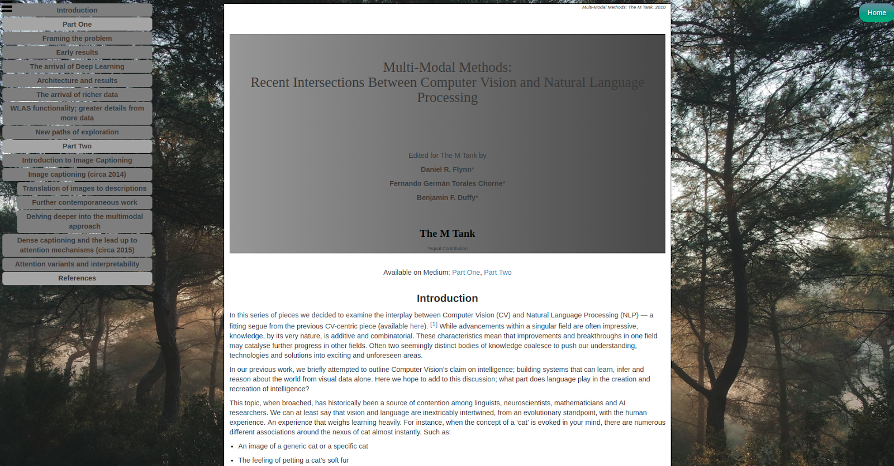
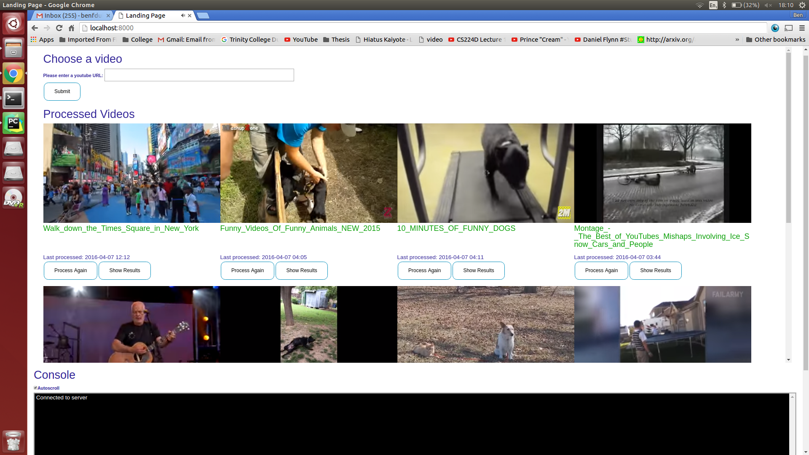
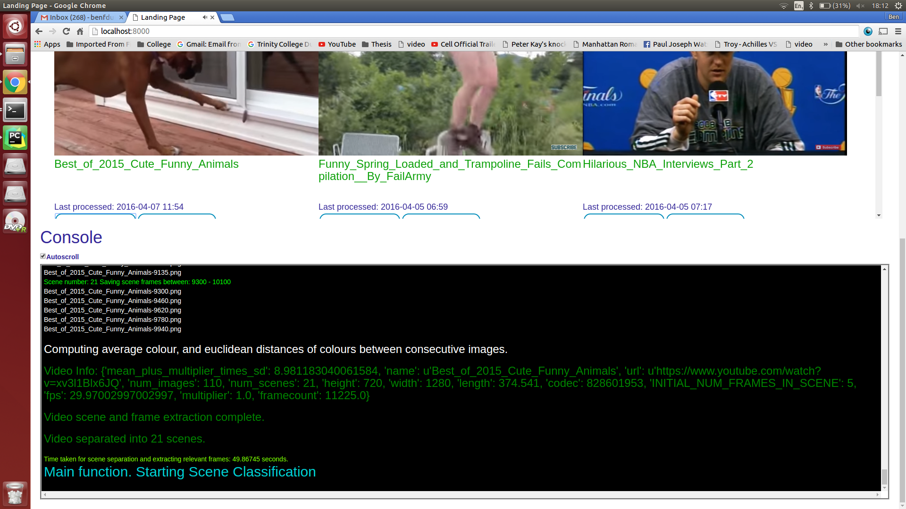
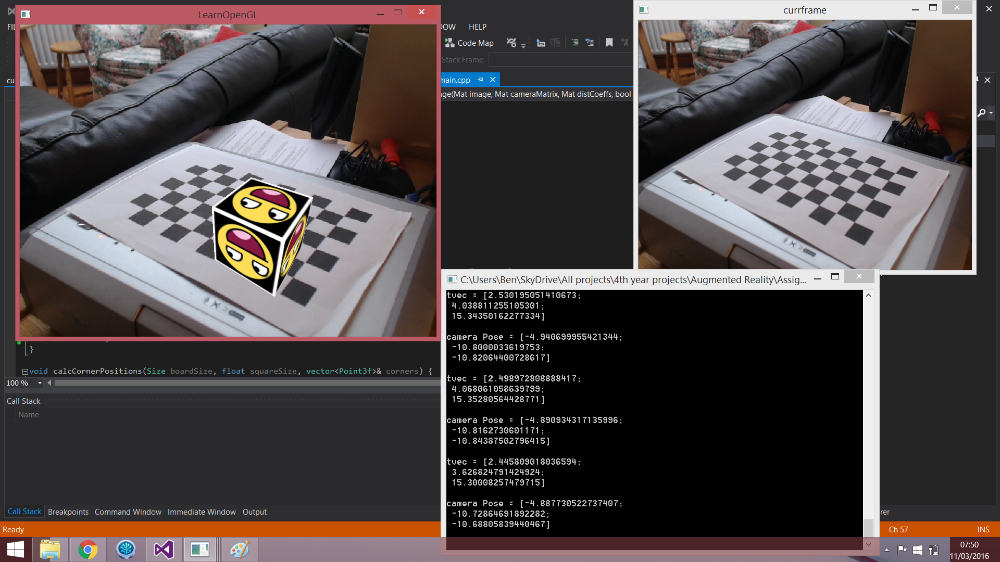
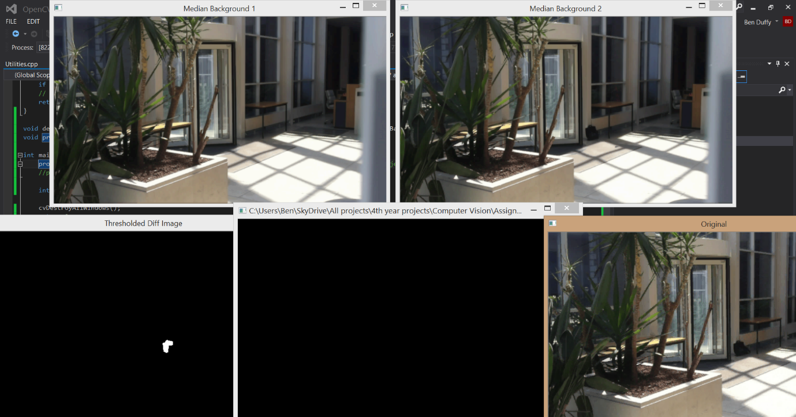
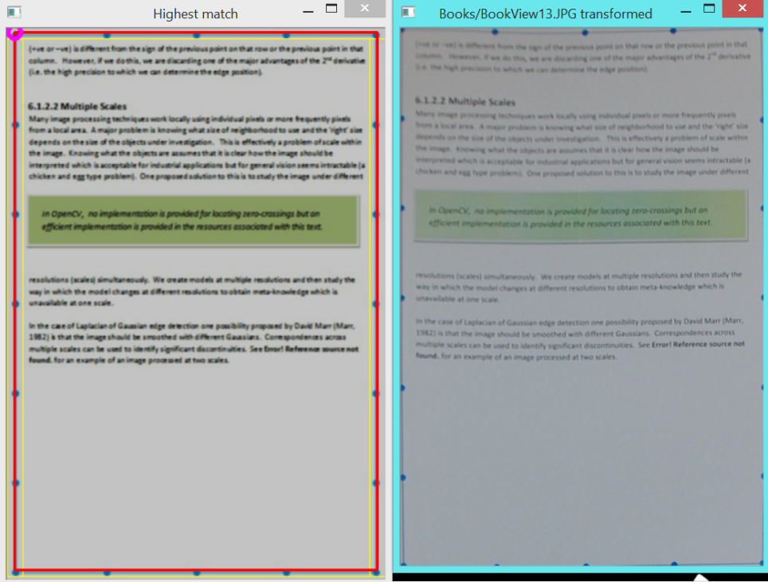
The original files remain in the repository. This page intentionally avoids embedding the legacy YouTube URLs that were producing blank/broken blocks.